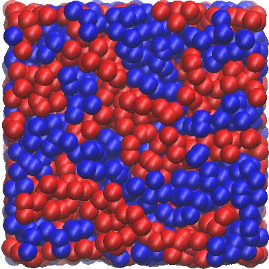

Meso- and Multi-scale Modules¶
Introduction¶
{kind=link}
This is a collection of the modules that have been created by E-CAM community within the area of Meso- and Multi-scale Modelling. This documentation is created using ReStructured Text and the git repository for the documentation source files can be found at https://gitlab.e-cam2020.eu/e-cam/E-CAM-Library which are public and open to contributions.
In the context of E-CAM, the definition of a software module is any piece of software that could be of use to the E-CAM community and that encapsulates some additional functionality, enhanced performance or improved usability for people performing computational simulations in the domain areas of interest to us.
This definition is deliberately broader than the traditional concept of a module as defined in the semantics of most high-level programming languages and is intended to capture inter alia workflow scripts, analysis tools and test suites as well as traditional subroutines and functions. Because such E-CAM modules will form a heterogeneous collection we prefer to refer to this as an E-CAM software repository rather than a library (since the word library carries a particular meaning in the programming world). The modules do however share with the traditional computer science definition the concept of hiding the internal workings of a module behind simple and well-defined interfaces. It is probable that in many cases the modules will result from the abstraction and refactoring of useful ideas from existing codes rather than being written entirely de novo.
Perhaps more important than exactly what a module is, is how it is written and used. A final E-CAM module adheres to current best-practice programming style conventions, is well documented and comes with either regression or unit tests (and any necessary associated data). E-CAM modules should be written in such a way that they can potentially take advantage of anticipated hardware developments in the near future (and this is one of the training objectives of E-CAM).
Pilot Projects¶
One of primary activity of E-CAM is to engage with pilot projects with industrial partners. These projects are conceived together with the partner and typically are to facilitate or improve the scope of computational simulation within the partner. The related code development for the pilot projects are open source (where the licence of the underlying software allows this) and are described in the modules associated with the pilot projects.
Extended Software Development Workshops¶
DL_MESO_DPD¶
The following modules connected to the DL_MESO_DPD code have been produced so far:
ESPRESSO++¶
The following modules connected to the ESPRESSO++ code have been produced so far:
- Hierarchical Strategy for Simple One-Component Polymer Melts: fixed-local-tuple
- Hierarchical Strategy for Simple One-Component Polymer Melts: md-softblob
- Minimize Energy : A Component of the Hierarchical Equilibration Strategy for Polymer Melts
- Hierarchical Strategy for Simple One-Component Polymer Melts: constrain-com
- Hierarchical Strategy for Simple One-Component Polymer Melts: constrain-rg
- Feedback control mechanism: A Component of the Hierarchical Equilibration Strategy for Polymer Melts
- Reinsertion: A Component of the Hierarchical Equilibration Strategy for Polymer Melts
- Fine-graining: A Component of the Hierarchical Equilibration Strategy for Polymer Melts
- Coarse-Graining: A Component of the Hierarchical Equilibration Strategy for Polymer Melts
ESDW Barcelona 2017¶
The first Meso- and Multi-scale ESDW was held in Barcelona, Spain, in July 2017. The following modules have been produced: